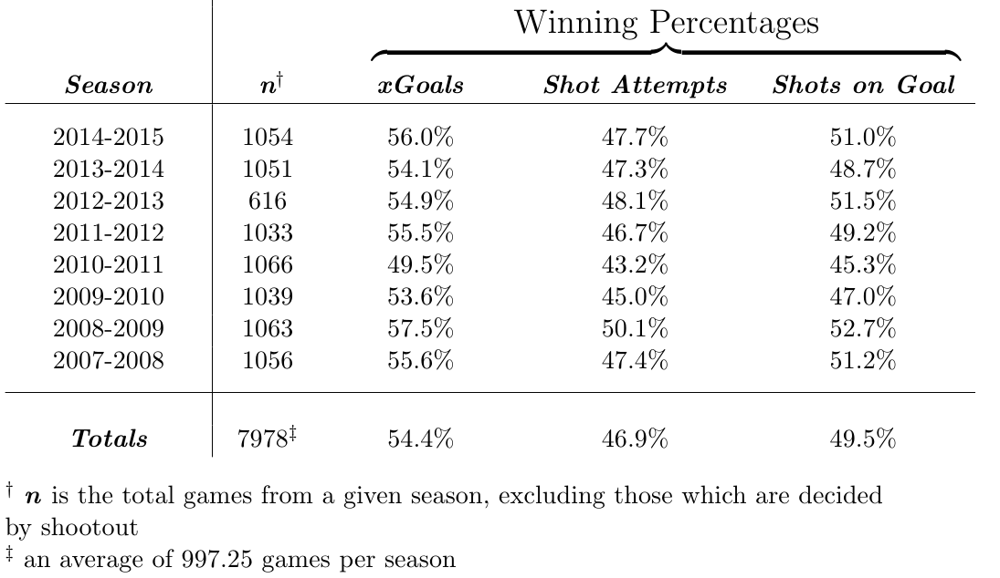

Fall 2015

My friend Jamie McCorriston and I have developed a set of distance based shot quality metrics for the National Hockey League. By regressing shooting percentages from various distances at various game states, we created a set of expected goal models at both a team and individual player level. The full dataset can be seen at our site Fourth Line Heroes with more detailed explanations available here, here, and here. Our flagship metric, the xGoal, has been shown to be a better indicator of team success on an individual game level than commonly referenced metrics shots on goal and shot attempts, suggesting that expected goals are less influenced by score effects than shot volume based metrics.